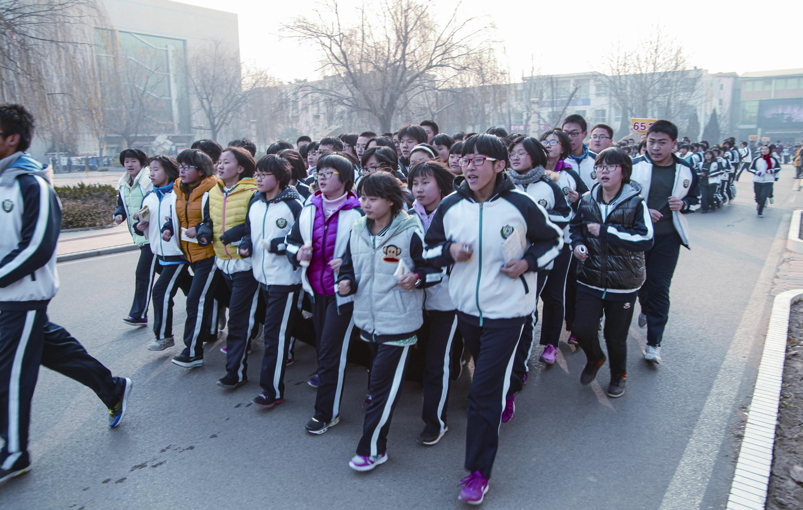
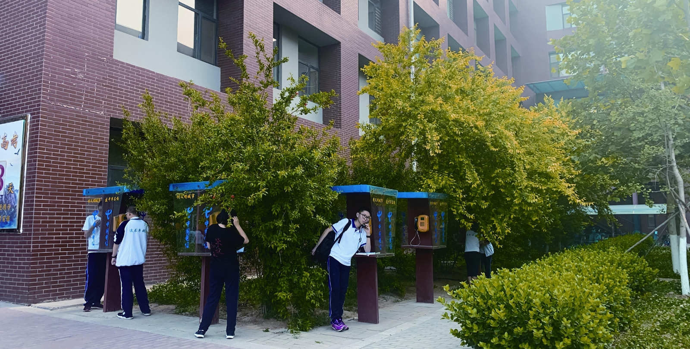

两年前，张颖刚进大学，经常给自己的高中母校辟谣。
她跟同学们解释，衡水中学跑操时不会边跑边背书，也不是人跟人之间紧贴着没有空隙。
也解释，衡水中学并不是指衡水的所有中学，而是衡水中学和它参办的衡水市第一中学。衡中人把前者称为北校区，后者叫作南校区。
还解释，每年高考前市面上所谓的衡水密卷都是假的，他们的老师从未出过什么密卷。而且他们也不是外界所说的只知道学习的书呆子。
张颖的经历，折射的是衡水中学自“出名”以来，在舆论场上面临的常态—猜测、争议。
有人指责它跨地区掐尖招生的方式，破坏了基础教育的生态，也有人称它不过是一个盈利机构。身在其中的人，则自认因衡中得福，考上自己心仪的高校，人生轨迹得以改变。
争议烟尘背后，衡水中学的学生，究竟是怎样一种存在？
片段
毕业两年，张颖对衡中三年生活的记忆已经有些模糊，回忆总是以片段的形式泛起。
在最紧张的高三，每次月考后，班主任在班会课上都会给大家放一首《光明》。
没有人说话，考得如意的人平静地坐着，感到的是希望；考得差的人流着眼泪，将“虽然失败的苦痛，已让我遍体鳞伤，可我坚信光明就在远方”这三句词记在心里。
在张颖记忆里，这是能代表她高中生活的画面，也是她离开后对衡中的评价—给人希望、自信和让人努力。
在张颖升入高二时，秦桑选择从一所刚上了3个月的211高校退学，一个人拉着行李箱走进了衡中南校区的校门。
想起在那里的8个月，脑海里首先出现的也是片段。
教室的窗户很大，配着宝石蓝的窗帘，阳光可以微微穿透它，将窗外的树影摇曳在上面。窗外是另一栋教学楼的红墙，墙上写着“教育要面向现代化，面向世界，面向未来”。从秦桑的座位上望出去，看到的是“面向未来”。
她去衡中，就是为了追求理想中的未来。
今年刚毕业的许云，也有自己的回忆片段。他在一次考试中打翻了自己带的开水，烫伤了脚踝。班主任知道后，迅速出去买了烫伤药，当场蹲下来给他涂，而他则继续考试。
打开记忆匣子的一刻，张颖、秦桑、许云他们总会被高中生活里的温暖、美好击中，记忆慢慢展开时，更多的细节才开始显露。
高三635班，145个人，那是秦桑读书以来见过人数最多的班级。她听同学说，这个大教室，是拆掉了两个相邻教室的隔墙拼成的。
坐在最后的同学看不清黑板上的字和老师的脸，所以在教室的中间，垂直地挂着两块大屏幕，将黑板上的内容投影在其上，搭配着教室里的音箱，将“知识”传给后面的人。
秦桑去复读，比别人晚报到3个月，班主任没有给她重新排学号，直接把一个退学女生的学号给了她。很长的时间里，老师点名时都把她喊作“李雅婷”。
那些不熟的同学们也跟着喊她“李雅婷”。直到她成绩排名到了30多名，老师和同学们才知晓她真正的名字。这样的人不止她一人，來去频繁，班里有十几人的学号都是继承而来，其中有些成绩不突出的人直到最后离开，真实姓名也不会被大部分师生知晓。
秦桑告诉南风窗记者，那种感觉就像是“偷渡”，唯有强大，才能露头。
赛跑
每一天，都被规划得满满当当。
张颖说，在衡中的每一天从铃声开始，在铃声中结束。这跟秦桑的讲述一致，每天清晨5点40分，铃声准时响起，起床。然后从床底下的大抽屉里取出提前叠好的被子放床上，再把床上盖过的被子塞进抽屉。
学校对内务要求严格，起床后被子必须叠整齐，否则就会扣罚班级的分数。为了节省时间和应对检查，每人准备了两床被子，一床提前叠好放在抽屉。
这一通操作后，有的同学会冲进卫生间里擦一把脸，有的含一口漱口水，然后就往外跑。“所有的同学都是冲出宿舍的，没有一个人是走的。”秦桑说，班主任总是提前到达，所以没有哪个同学希望被班主任看到自己是最后一个。
奔来的每个学生手里都带着书本或学习资料，尽管候操的时间只有短短几分钟，但只要人群一站定，纷乱且大声的背诵声就会传出。
早操后到午饭前的时间会被一节自习和4节课填满。张颖记得，他们的自习要求“零抬头”。若没有必要的理由，埋下去学习的头不允许抬起。几乎没人抱侥幸心理，因为你不知道当你抬起头时目光会不会和巡视的班主任碰上，也不知道抬头的时候有没有人正盯着教室里的监控。
课间也是被填满的。秦桑说，学校要求“无声课间”，下课后不允许吵闹玩耍。如果老师不拖堂，前几分钟总结课上刚讲的内容，后几分钟预习接下来的课。而且，大多时候，下节课的老师都会早到，因为这是学校倡导的。
跟时间的赛跑几乎无处不在。
秦桑去衡中时，寄了一麻袋衣服过去，但一直到她离开，只穿过3件。因为校服几乎没机会换下来，也没有时间和心思去洗衣服。
秦桑洗衣服的周期是21天，不是懒，而是她们21天才放一次假，一次最多24小时，少的时候五六个小时。只有放假的时候她才有时间洗衣服。所以不管穿得多小心，21天后，校服胸前不是油渍就是墨迹。
许云买了3套校服来应对这个问题。一套穿脏了就换上另一套，3套足够他撑住一个月。每次放假后，就把所有脏衣服带到父母提前订好的酒店洗干净。
有些人会选择在中午放学时洗衣服，但对秦桑而言，中午的时间只能是个“单选题”—吃饭、给家人打电话、洗衣服三者择一，时间只有10分钟左右。
中午12点下课后，没人立马冲向食堂，而是在教室学习到12点半左右才会离开。在12点40分回宿舍的铃响之前，他们必须要吃完饭赶到宿舍。秦桑说，过程中都在跑，跑到食堂后，也没时间慢慢挑菜，食堂阿姨会随机给你打。
打到饭后，跟时间的赛跑并没有缓速。秦桑会在5分钟内吃完饭，有些同学会更快，“厉害点的学生会端着盘子一边吃，一边往外走，走到回收餐具的地方，把盘子一扔，吃多少算多少”。
秦桑说，她经常在食堂看到一群人围着餐具回收处的垃圾桶吃饭，“基本都是穿紫色校服的高三学生，他们觉得吃得差不多了，就把剩菜往垃圾桶一倒就走了”。这样可以节省下找位子坐下以及吃完起来再走到餐具回收点的时间。
但许云觉得，这只是个人的选择。他在衡中三年，从未端着盘子边吃边往外走，次次都是自己挑菜然后坐着吃完，再跑回宿舍。但洗澡的时间的确紧张，在高一高二的时候，他基本是放假才能洗澡。
有时，秦桑会在中午选择洗澡而放弃吃饭，代之以饼干充饥。如果碰到同样想洗澡的室友，就得跟她竞赛，“一下课我看到我室友也在跑，我就意识到她也要回去洗澡，然后我们俩就比谁跑得快，可以先到宿舍”。
在秦桑的印象里，自己和周围的同学们大都是头发油油的，脸上会长痘。夏天教室里会有一股明显的异味，但每个人的精神状态是饱满的。没多少人过多在意自己的形象，因为大部分时候看不到自己是什么模样，“根本没有时间照镜子”，秦桑说，她记得每次自己去水房洗衣服的时候，才会看看镜子里的自己，看看脸上又长了几颗痘。
竞争
尽管秦桑们与时间的赛跑如此激烈，但有个时间永远是充足的—睡觉。中午必须保证50分钟的午休，晚上10点宿舍熄灯，之后便不能再讲话，也不准有光亮。
秦桑说，学校为了防止学生们回宿舍后偷偷学习，宿舍里没有桌子，也没有插座。“如果你打个手电筒在被子里看书，被老师发现了是要写检讨的，严重的会被要求回家反思一周。”
回家反思是衡中最“残酷”的惩罚，尤其对高三的学生而言。一周不上课，会落后不少进度，课桌上的试卷也会堆满，焦虑感会成倍地增加。
高速运转的机制，使得“跑”成为衡中学生的日常。
秦桑说，在学校里做任何事情几乎都是跑着去的。“只要不是在人多到跑不动的地方，你就一定要跑起来，没有走的时间。”张颖记得，尽管学校喇叭里会放“不要奔跑”，巡视的“小黄帽”也会监督学生们在下课后不要冲刺，但在紧张的学习节奏下，他们慢不下来。
追赶，因竞争无处不在。从入学那一刻，竞争就已经开始。每个人的学号是自己入学成绩在班里的排名，每一次考试后，对照着自己的学号和排名，进步或退步便一目了然。每隔一学期，学校会根据学期内的综合成绩排名，对学号进行新的调整。
每个班级也有自己的竞争目标，称作对手班。
秦桑记得，每一次月考之后，班主任和科任老师都会全方位对比他们班和对手班的成绩数据。“在数据方面衡中做得很可怕，平均分的比较已经不兴用，而是各种向度对比的复杂表格。”
秦桑说，老师们将成绩对比精确到了小数点后两位，对比的项目甚至小到某道题目的具体得分。既有跟其他班级和班内同时期的比较，也有跟过往历次考试的比较。
张颖还见过那种对手班之间互相放狠话的情景。在他们月考后的一节班会课上，对手班几个同学就走上讲台说些下次考试一定会超过他们之类的“狠话”。当然，他们也会予以“回击”。但这并非常态，“实在激不起大家热情时才会这样干”。
进入高三后，竞争会明显加剧，它通过急剧增加的考试次数体现出来。张颖告诉记者，到高三时，除了一个月一次的参照高考的月考外，每周还会有周测。“周三有周中测，周五有周五测，周一晚上考语文，周二考数学。”在她的印象里，高三后期的每一天几乎都在考试。
“所以到高考的时候一点都不紧张。”张颖说。
老师也是这个竞争体系中的一部分。秦桑现在的大学室友木木也是从衡水中学毕业，她记得，老师或班主任所带班级在年级中的排名，跟他们的绩效考核是关联的。“如果是第一名的话，老师上完课就可以走，不用坐班，如果最后一名的话，需要在大会上做检讨，还要负责打扫卫生。”
有时候，老师们的参与会加剧竞争。木木告诉记者，这种情况因班主任而定。她高二升高三的暑假放了15天假，但他们班主任跟家长建议，在酒店包个会议室，让学生们留在衡水按照学校的节奏继续学习，大多数家长欣然答应。

木木记得，当时全班55个人，只有8个人回了家，其他人都放弃暑假留在了衡水。木木是那8个人之一。但就算回了家，班主任也要求她的作息跟学校一样，让她母亲每天按时拍下她的动态给班主任发过去。
衡中的校园，没有边界。
得失
毕业两年后，张颖现在回想起来的全是美好的东西，她说3年的衡中生活留在心里的是“不怕吃苦，以及碰到困难时可以去应对的精神，也有了不会被（困难）轻易吓退的自信”。
现在她遇到一些难事，就会想：“这些跟我高中比，算得了什么？”
许云跟张颖的感受类似，“能严格按照计划完成自己的事情，有充分的耐心做事，还能保持乐观向上的心态”。
秦桑說，她在衡中体验到了最纯粹的学习状态。“在那个地方，你满心满眼只有一个目标。它不是洗脑式的，就是你自己发自内心地想要去冲。”
但在进入新的人生阶段时，他们也发现，有些东西是在衡中失去的。
对木木而言，在衡中的3年，她失去的是自我意识和对自己情绪的控制。“衡中没有教会我们如何跟自己相处，我们每天面对的是考试成绩，是高兴或者愤怒的老师，唯一被忽略掉的就是自己。我们不知道怎么去面对和化解自己的情绪，所以只能一个人忍着。”木木说，“某天我很难过，我想哭，你会发现没有时间可以哭。我很崩溃的时候，有时会躲在被子里哭，但又不敢出声，因为出声被外面老师发现的话，你还会被扣分挨罚。”
秦桑在那8个月里失去了自己原有的活泼性格。那时，她会装得比较呆，也会变得沉默，说话时会主动降低音量。“那里需要的是听话的、话少的、有上进心的学生。”
毕业5年的樊中，有着跟张颖他们类似的校园经历，也会怀念那时的老师和同学，但他说自己对衡中没有什么感情。因为他去了大学后对比发现，那3年抹杀了他对人生的规划和在未来的更多可能性。
“我觉得高中是一个非常关键的时间点，而衡中让你在这个时间点完全与外面社会脱节，无法让我明白自己喜欢什么，想要什么，擅长什么。这些东西是我上大学后一两年才开始思考的。”樊中说，当时的他们并非没有时间去想这些，而是没有意识。
声音有多种，张颖就没觉得自己跟大学同学有什么差距，他们学校有好几个衡中人，据她的观察，他们在大学里表现得活跃、自信，而非沉默、孤僻。
采访结束的时候，张颖半开玩笑地叮嘱了记者一句：“为我们学校（衡中）正名啊。”